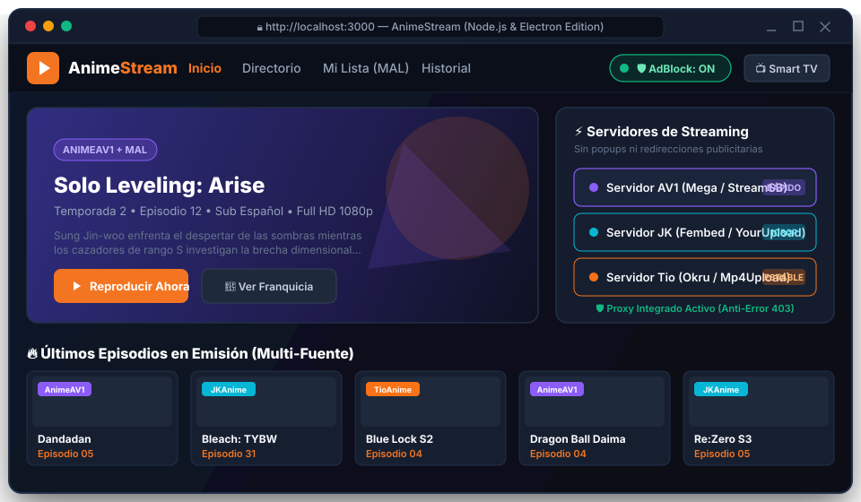
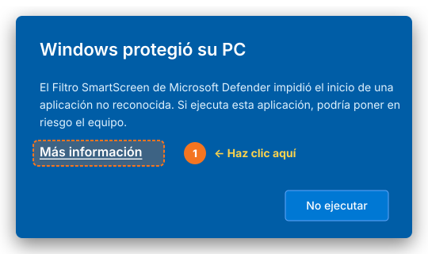
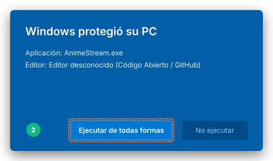

Agregador Multi-Fuente en Tiempo Real
Extrae y unifica simultáneamente el catálogo de AnimeAV1, JKAnime y TioAnime. Si un servidor de terceros falla, los otros continúan funcionando sin interrupción.
Disfruta de tus animes favoritos con un catálogo unificado en tiempo real de AnimeAV1, JKAnime y TioAnime. Escudo AdBlock integrado contra popups y redirecciones, soporte para mandos Smart TV y modo portable de 1-clic sin instalación.

AnimeStream no es una página web con anuncios molestos ni un software pesado. Es un agregador nativo de alto rendimiento creado específicamente para que veas anime sin interrupciones.
Extrae y unifica simultáneamente el catálogo de AnimeAV1, JKAnime y TioAnime. Si un servidor de terceros falla, los otros continúan funcionando sin interrupción.
Di adiós a popups, popunders y capas transparentes invisibles que secuestran tus clics (anti-clickjacking). Sandbox aislado para reproductores y proxy sanitizador.
Control espacial con cruceta (D-Pad), anillo de enfoque de alto contraste y mapeo de botones multimedia. Compatible con mandos de Hisense (VIDAA), LG (WebOS) y Samsung (Tizen).
Descubre secuelas, precuelas, películas, OVAs y especiales con carátulas en alta resolución mediante la API de MyAnimeList. Filtro inteligente que omite mangas e historias impresas.
Enrutamiento inteligente Anycast que evita bloqueos de operadoras y Cloudflare. Caché en memoria thread-safe con respuestas en menos de 20 milisegundos.
Importa tus listas de seguimiento desde MyAnimeList (.xml / .xml.gz) con detección automática. Organiza tus animes en Viendo, Visto, Pendiente, Pausado y Favoritos.
AnimeStream consulta las principales plataformas en tiempo real para que siempre encuentres el anime que buscas con la mejor calidad disponible y servidores operativos.
Pioneros en codificación de última generación AV1 y alta definición. Servidores rápidos con excelente compresión visual sin pérdida de nitidez.
Uno de los repertorios de anime más antiguos y completos de habla hispana, con miles de series clásicas, estrenos en emisión y películas.
Velocidad inmediata en la publicación de nuevos episodios subtitulados según se estrenan en Japón, con múltiples opciones de servidores de vídeo.
Compara por qué miles de usuarios eligen el ejecutable de escritorio AnimeStream en lugar de navegar en sitios web plagados de publicidad.
| Característica | 🎬 AnimeStream (Windows) | Sitios Web Comunes | Otras Apps de Escritorio |
|---|---|---|---|
| Bloqueador de Anuncios y Popups | Nativo e integrado (0 anuncios) | Invasivo (Decenas de popups) | Requiere extensiones externas |
| Fuentes Múltiples Unificadas | AnimeAV1 + JKAnime + TioAnime | Solo 1 fuente por sitio | Generalmente solo 1 fuente |
| Instalación y Configuración | Portable (Doble clic y listo) | En navegador | Instaladores pesados (500MB+) |
| Control con Mando / Smart TV | Soporte espacial 2D nativo | Requiere ratón/puntero incómodo | No soportado |
| Integración con MyAnimeList | Relaciones de sagas + Importar XML | No disponible | Parcial o limitado |
| Privacidad y Seguridad | 100% Código Abierto (Sin trackers) | Trackers de publicidad masivos | Código propietario cerrado |
AnimeStream es sumamente ligero y eficiente. Consume menos de 60 MB de memoria RAM en reposo.
No necesitas instalar Python, ni configurar bases de datos ni instalar entornos. El ejecutable hace todo por ti.
Haz clic en el botón de descarga para obtener la última versión oficial directamente desde los servidores seguros de GitHub Releases.
Descargar AnimeStream.exe
Haz doble clic sobre AnimeStream.exe. Dado que AnimeStream es un proyecto independiente de código abierto y no paga miles de dólares anuales por un certificado corporativo a Microsoft, Windows Defender SmartScreen puede mostrar una pantalla azul de aviso ("Windows protegió su PC").
Paso A: Clic en "Más información"

Paso B: Clic en "Ejecutar de todas formas"

Al iniciarse, el servidor local arrancará automáticamente y abrirá AnimeStream en tu navegador predeterminado (en http://localhost:8000). ¡Ya puedes buscar cualquier anime, agregar a favoritos o enviarlo a tu Smart TV!
Obtén siempre la compilación más reciente y estable directamente desde GitHub. Sin instaladores basura, sin publicidad y sin requisitos previos.
Todo lo que necesitas saber antes y después de descargar AnimeStream en tu ordenador con Windows.
Sí, AnimeStream es 100% gratuito y de código abierto bajo la Licencia MIT. No contiene anuncios de pago, microtransacciones, cuentas premium ni funciones bloqueadas. Puedes usarlo, revisarlo y distribuirlo libremente.
Microsoft SmartScreen advierte de forma predeterminada sobre cualquier software nuevo que no cuente con un certificado digital comercial de pago emitido por Microsoft (los cuales tienen costos anuales muy elevados). AnimeStream es software libre comunitario. Su código está publicado en GitHub y es completamente seguro y limpio. Solo debes presionar "Más información" y luego "Ejecutar de todas formas".
No. El ejecutable AnimeStream.exe ya contiene empaquetados el motor de Python, FastAPI, Uvicorn y todo el frontend. No necesitas instalar Python ni librerías adicionales. Solo haz doble clic y comenzará a funcionar.
AnimeStream cuenta con una arquitectura de protección en múltiples capas: intercepta la función nativa de ventanas emergentes window.open(), escanea y elimina en tiempo real capas invisibles transparentes sobre el vídeo (anti-clickjacking), y utiliza un iframe con sandbox estricto para evitar redirecciones indeseadas.
¡Sí! Puedes abrir el navegador de tu Smart TV (Hisense con VIDAA, LG con WebOS, Samsung con Tizen o Android TV) e ingresar la dirección IP local de tu PC con el puerto 8000 (por ejemplo http://192.168.1.50:8000). AnimeStream detecta el mando a distancia y te permite navegar fácilmente con la cruceta (D-Pad).
En AnimeStream ve a la sección "Mi Lista". El sistema cuenta con detección automática de archivos de exportación de MyAnimeList (.xml o .xml.gz) que tengas en tu equipo, o puedes subirlo manualmente para tener sincronizados tus animes viendo, completados y pendientes.
Simplemente vuelve a visitar esta página o el repositorio de GitHub y descarga el nuevo archivo AnimeStream.exe. Puedes reemplazar el ejecutable anterior directamente sin perder tus datos de historial o favoritos, ya que se guardan de forma segura en tu navegador.